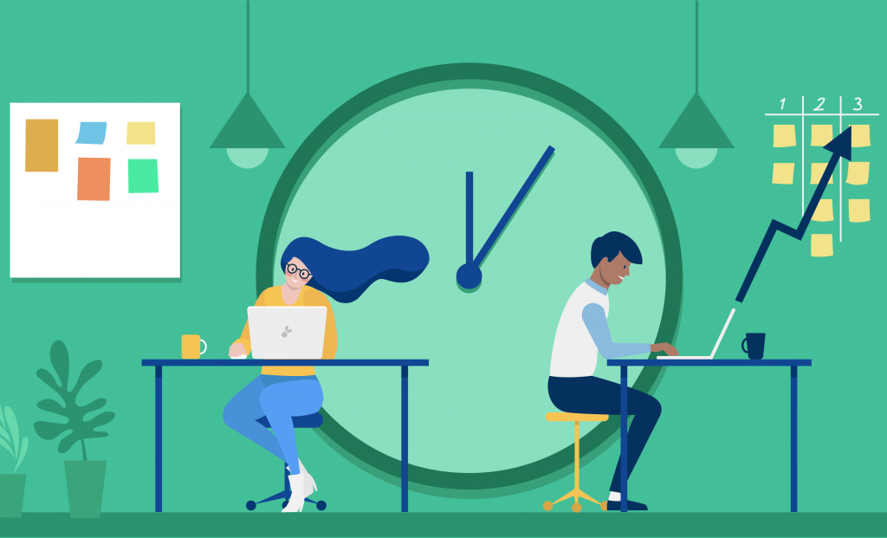

Living Simple and Productive life
September 3, 2023 | 3 Comments
Living a simple and productive life is about embracing the beauty of minimalism and purposeful intentionality. It means decluttering not just physical spaces but also the mind, focusing on what truly matters, and eliminating distractions that hinder progress. By simplifying our daily routines and priorities, we create room for greater efficiency, creativity, and meaningful connections. It's a mindful journey towards balance and fulfillment, where we find contentment in the simple joys of life while achieving our goals with clarity and purpose.
Continue Reading
How to manage your time
Managing your time effectively is a skill that empowers you to make the most of each day. It involves setting clear goals, prioritizing tasks, and creating a structured schedule. To do this, you should identify your most important and urgent responsibilities, allocate time blocks for focused work, and minimize time-wasting activities.
Continue Reading

September 3, 2023 | 10 Comments
How to stay productive 90% of the day
Staying consistently productive for 90% of the day requires a combination of discipline, effective strategies, and self-awareness.
Continue Reading
August 31, 2023 | 103 Comments
Effective ways to do your work
Effective ways to do your work involve careful planning, prioritization, and efficient execution. Begin by setting clear goals and creating a prioritized to-do list to keep you on track. Manage your time wisely through techniques like time blocking, and eliminate distractions that hinder your focus. Breaking tasks into smaller steps makes them more manageable, while setting deadlines ensures progress.
Continue Reading
August 20, 2023 | 233 Comments